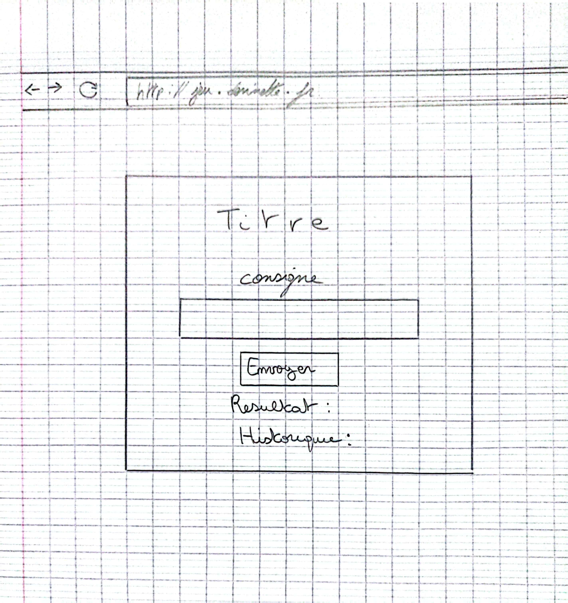

QUÊTE : LE JUSTE NOMBRE
📜 DESCRIPTION DE LA MISSION
Première pierre de mon parcours de développeur, ce projet avait pour objectif la conception intégrale d'un dossier de spécifications techniques et fonctionnelles. Il s'agissait de traduire un besoin client en une documentation structurée : description des cas d'utilisation, inventaire des fonctionnalités, protocoles de tests, matrice des responsabilités et maquettage de l'interface utilisateur.
📜 TÉLÉCHARGER LE CAHIER DES CHARGES🎯 OBJECTIFS DU PROJET
L'ambition était de développer une application web ludique où l'utilisateur doit deviner un nombre généré aléatoirement par le système. Ce travail collaboratif, réalisé en binôme avec Théo Oger, a permis de confronter nos logiques et d'harmoniser nos méthodes de développement.
📜 TÉLÉCHARGER LA RÉPARTITION DES TÂCHESMAQUETTE DU PROJET

📅 DIAGRAMME DE GANTT
Planification du développement sur 5 jours. Survolez les barres pour les détails.
🏆 RETOUR D'EXPÉRIENCE
Cette première incursion dans le développement collaboratif fut fondatrice. J'y ai découvert la nécessité d'une communication fluide et d'une synchronisation constante au sein du binôme. L'application des rituels Agiles nous a offert un cadre structurant pour optimiser notre organisation et garantir la livraison d'un produit conforme aux attentes dans les délais impartis.
👥 ORGANISATION DU PROJET
Maîtrise d’œuvre :
Dalil Maksene et Théo Oger
Maîtrise d’ouvrage :
notre professeur référent.